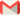

- Descarga este archivo.
- Abre el Calendario de Google.
- A la izquierda, junto a "Añadir el calendario de un contacto”, haz clic en el signo +.
- Selecciona “Importar” y sube el archivo. ¡Listo!
*Para que los cambios impacten en tu Calendario de Google pueden pasar hasta 12 horas.